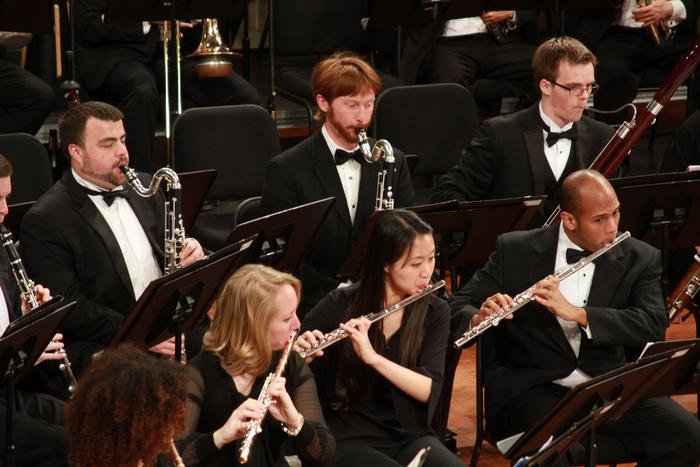

Auxiliaries in the clarinet family, from highest in pitch to lowest.
- Ab clarinet
- Eb clarinet
- A clarinet
- Alto clarinet
- Basset horn
- Bass clarinet
- Eb Contra-Alto clarinet
- Bb Contra-Bass clarinet

|  |
| This image on the left shows how each clarinet ranges in size. |
This right image shows the bass clarinet being played in an orchestral setting. Out of all of the auxiliaries the bass clarinet, Eb, and A clarinet are the auxiliaries used most often in an orchestra. |
| Click here to learn about the bassoon |
| Click here to go back to the homepage |